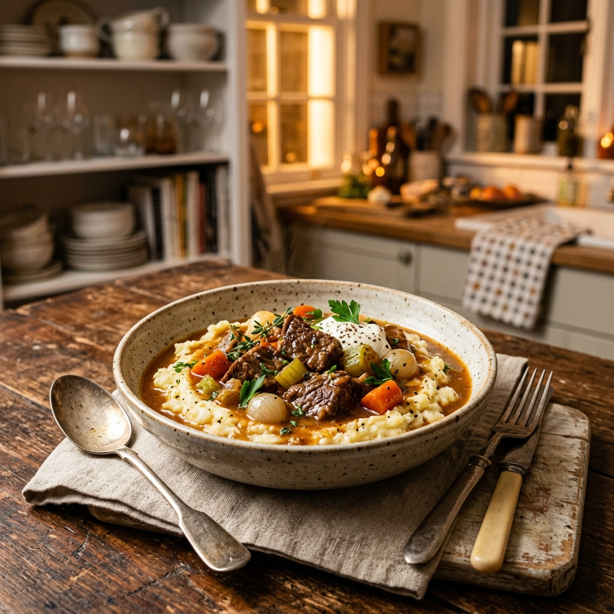

アプリをご利用いただくには、共通のアクセスコードを入力してください。
お気に入りや検索履歴を保存するための識別用ニックネームを入力してください。
現在のユーザー: ---
オフライン用のキャッシュデータを削除し、サーバーから最新データを強制再取得します。
新規レシピの追加、Gemini画像解析機能は管理者PINが必要です。

説明文が入ります。
管理者機能を使用するには、管理者PINを入力してください。
料理写真、または手書きレシピメモ画像をアップロードすると、Geminiが自動解析して下書き登録します。
手動で現在の状態のスプレッドシートコピーをGoogleドライブのbackupsフォルダへ保存します。